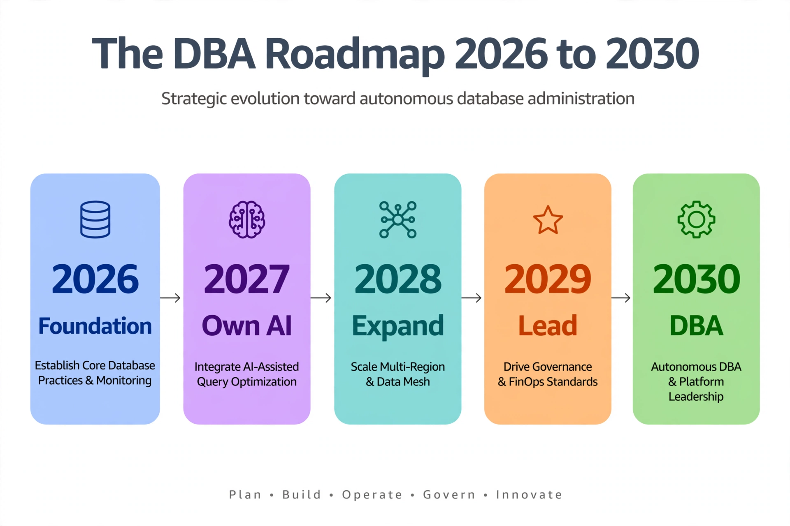

Chapter 40: The 2030 DBA: Career Roadmap in the AI Era
Thirty-nine chapters ago, this book promised that AI would change database administration. It has kept that promise — and if you have read straight through, you now know how to build anomaly detectors, forecast capacity, automate remediation behind human gates, protect privacy in ML pipelines, and govern the whole stack responsibly. This final chapter turns the lens around: given that the work is changing, how does the worker change? What does a DBA's career look like in 2030, and what do you do — concretely, this year and next — to make sure you are the person thriving in it rather than the person disrupted by it?
The honest answer has two halves. Half the traditional DBA job is being automated: routine index maintenance, threshold alerting, first-pass query tuning, backup verification, capacity spreadsheet math. The other half — the judgment half — is becoming more valuable, not less: data architecture, recovery strategy, security posture, performance reasoning under novel conditions, and now the governance of AI systems that act on your databases. The 2030 DBA is not a diminished role. It is a broader one, and this chapter is the roadmap for growing into it.
---
What AI Automates Away — and What It Cannot
Start with a clear-eyed inventory, because career planning on denial is not planning. By 2030, the following will be substantially automated in most SQL Server shops: routine maintenance scheduling (workload-aware automation like Chapter 10's replaces fixed jobs), first-response triage (anomaly detection plus LLM diagnosis handles the common incidents), basic query tuning (plan regression detection and statistics-driven fixes run without humans), capacity forecasting arithmetic (models beat spreadsheets), and compliance evidence collection (audit pipelines assemble the reports).
What resists automation is everything involving novel judgment under uncertainty: architectural decisions (should this workload move to Azure SQL, stay on-prem, or split?), recovery strategy (what is the right RPO/RTO tradeoff for this business, and what does it cost?), security posture (who should access what, and what does "enough" protection look like?), novel performance problems (the failure mode nobody has seen before, where pattern matching fails and first-principles reasoning is the only tool), and AI governance itself (someone has to own the oversight tiers, the kill switches, and the explainability logs from Chapter 39 — that someone is you).
The pattern: AI absorbs the repetitive and the pattern-matchable; it amplifies the value of judgment, accountability, and systems thinking. DBAs who defined themselves by executing checklists are exposed. DBAs who defined themselves by owning outcomes — "this database is fast, safe, and recoverable, and I can prove it" — become more essential, because now they own those outcomes across both the database and the AI systems operating on it.
---
The Five Competencies of the 2030 DBA
The DBA skill stack is expanding, not replacing. Your SQL Server fundamentals — T-SQL, indexing, locking, recovery, security — remain the foundation; everything below builds on them. The five new load-bearing competencies:
1. Python for data operations. Not software engineering — data operations: pyodbc, pandas, scikit-learn, enough to build the telemetry pipelines, anomaly detectors, and automation glue in this book. If you can write the scripts in Chapters 10 and 37, you are fluent enough. This is the single highest-ROI skill investment a DBA can make right now.
2. ML literacy for operators. You do not need to derive backpropagation. You need to know what an Isolation Forest assumes, why a model decays, what precision/recall tradeoffs mean for paging, and how to read a feature importance plot. Operator-level ML literacy — enough to validate, monitor, and challenge models — is the difference between owning the AI stack and being owned by it.
3. Cloud data platform fluency. Azure SQL Database and Managed Instance, and at least conversational knowledge of RDS for SQL Server: elastic pools, hyperscale, serverless, managed identities, private endpoints. The 2030 estate is hybrid by default, and the DBA who can reason about where a workload belongs — and what AI services each platform offers natively — makes the architectural calls.
4. AI systems governance. The Chapter 39 toolkit: oversight tiers, explainability logging, kill switches, AI data inventories, incident response for automation-caused outages. This is becoming a formal organizational function, and DBAs — who already own audit, access control, and change management — are the natural candidates to lead it.
5. Communication and technical writing. The least technical and most career-limiting gap. As automation handles execution, the DBA's visible output shifts toward decisions and their justifications: architecture decision records, incident reviews, governance policies, the one-page memos that get automation authority approved. The DBA who writes clearly gets trusted with bigger calls.
Assess yourself honestly against all five, 1–5. Anything at 2 or below goes on this year's learning plan. The roadmap below sequences the work.
---
Three Specialization Tracks
The generalist DBA role is bifurcating. By 2030, senior database careers cluster into three tracks — pick the one that fits your strengths, because depth in one beats shallowness in three.
Track A — Performance & Reliability Engineering. The deep-systems track: query internals, storage engine behavior, distributed systems, chaos engineering for databases. You become the person called when the AI triage fails — the novel failure modes, the architectural performance reviews, the "we are migrating 40 TB with zero downtime" projects. Pairs with SRE practices; titles trend toward Database Reliability Engineer.
Track B — Data Platform & AI Engineering. The builder track: feature stores, vector search, model serving, MLOps pipelines, the full Chapter 38 platform. You own the infrastructure that the organization's AI runs on — which, as every team becomes an AI team, makes you central rather than supporting. Titles trend toward Data Platform Engineer or ML Platform Engineer with a database specialty.
Track C — Security, Compliance & AI Governance. The trust track: data classification, privacy-preserving ML, audit architecture, AI oversight frameworks, regulatory response. Regulated industries are hiring this profile faster than any other database specialty, because every AI initiative needs someone who can answer the auditor's questions. Titles trend toward Data Security Architect or AI Governance Lead.
All three tracks share the five competencies above — the tracks are where you go deep, not where you start. And all three are reachable from a traditional DBA background: Track A extends what you already do, Track B extends the automation and Python work from this book, Track C extends the security and compliance work you have always owned.
---
The Year-by-Year Roadmap: 2026 → 2030
2026 — Build the automation foundation. Python fluency: one working telemetry pipeline (Chapter 37's replication signals or Chapter 10's maintenance automation) running in your environment. Ship one shadow-mode AI system and write up the results. Goal: you have built something from this book, not just read it. Start the technical writing habit: document what you built as if the next DBA needs to run it — because they do.
2027 — Own an AI system in production. Promote your shadow-mode system through the gating tiers to autonomous execution for Tier 1 actions. Build the explainability log and run the weekly close-call review. Pick your specialization track and go deep on its first major project — a feature store (Track B), a chaos-tested HA architecture (Track A), or a privacy-preserving ML pipeline with a completed audit (Track C). Present the work internally; visibility compounds.
2028 — Expand scope beyond the database. Cloud platform fluency becomes operational: lead a hybrid architecture decision or a migration. Contribute to your organization's AI governance — write the oversight tier policy, run the AI data inventory. Begin external visibility: a blog post, a user group talk, an open-source tool. The DBA Library and QueryOptimizer exist because their author did exactly this — build in public and the career builds itself.
2029 — Lead, don't just operate. You are now the person others consult on AI-in-operations decisions. Mentor two junior DBAs through their own 2026-style foundation year — teaching is the fastest way to consolidate expertise and the clearest signal of senior scope. Own a budget line: the AI platform, the governance program, or the reliability engineering function. Titles follow scope; scope follows demonstrated ownership.
2030 — The 2030 DBA. You operate at the intersection this book describes: deep database judgment, fluent AI systems engineering, and the governance accountability to run both responsibly. Whatever your title says, your actual job is the same one DBAs have always had — the data is correct, the systems are fast, recovery is certain, and you can prove all three — extended to the AI systems that now share the work.

The timeline runs left to right across five pastel stages. Blue 2026 Foundation is about core database practices and monitoring done well — automation with shadow mode, not autonomy. Purple 2027 Own AI brings AI-assisted query optimization into production with gates and explainability. Teal 2028 Expand scales the approach across regions and data platforms. Orange 2029 Lead shifts the role toward governance and FinOps standards — mentoring others and owning a budget line. Green 2030 DBA is the destination: autonomous DBA and platform leadership built on judgment, AI fluency, and accountability. The footer's five verbs — Plan, Build, Operate, Govern, Innovate — describe how each year's work funds the next.
---
Building Proof: Portfolio Over Credentials
Certifications have their place — the Azure database certifications still open doors — but in a field changing this fast, proof of work beats proof of study. Hiring managers for AI-adjacent database roles ask one question in different forms: "show me something you built." The roadmap above generates that proof naturally if you build in public:
Open-source your automation. The telemetry collectors, anomaly detectors, and gating executors from this book are generic — sanitize them and publish. A GitHub repository with a working SQL Server anomaly detection pipeline says more about your 2030 readiness than any certificate.
Write about the failures. The shadow-mode log where the model was wrong, the close-call review that caught a bad threshold, the kill-switch game day — these are the stories that demonstrate judgment, and judgment is what employers are buying. A blog post titled "What our anomaly detector got wrong for a month" will be read by every hiring manager in the space.
Teach what you learn. Internal lunch-and-learns, user group talks, conference sessions. Teaching forces the clarity that reading never does, and visibility creates the opportunities — the Track B platform role, the Track C governance lead — that never get posted publicly.
The DBA Library itself is the worked example: seven books, free, built in public by a working DBA. Whatever your version looks like — a blog, a tool, a talk series — start it this year. In 2030, nobody will ask whether you kept up with AI. They will look at what you built with it.
---
The DBA's Enduring Edge
Close with the reason for optimism. Every wave of database technology — client-server, the web, cloud, and now AI — has produced the same prediction: the DBA is obsolete. Every wave has been wrong, because each wave automated tasks while creating new responsibilities that required exactly the DBA's core strengths: a paranoid respect for data correctness, a systems-level understanding of how failures cascade, and the accountability of someone who has carried the pager.
AI is the biggest wave yet, and it follows the same pattern. It takes the checklists and gives back the architecture. It takes the alert triage and gives back the governance. The databases are not going away; the data is not getting less valuable; the cost of getting it wrong is not getting smaller. Someone has to own all of that — the performance, the recovery, the security, and now the intelligence layered on top.
That someone is the DBA who chose to learn the new tools instead of fearing them. The forty chapters of this book were the curriculum. The next four years are the practicum. Start building.
---
Key Takeaways
QueryOptimizer — Self-Hosted SQL Performance Workbench
EXPLAIN visualizer · Index advisor · Slow query dashboard · SQL Server
Test yourself on this chapter
5 questions · instant scoring · explanations included